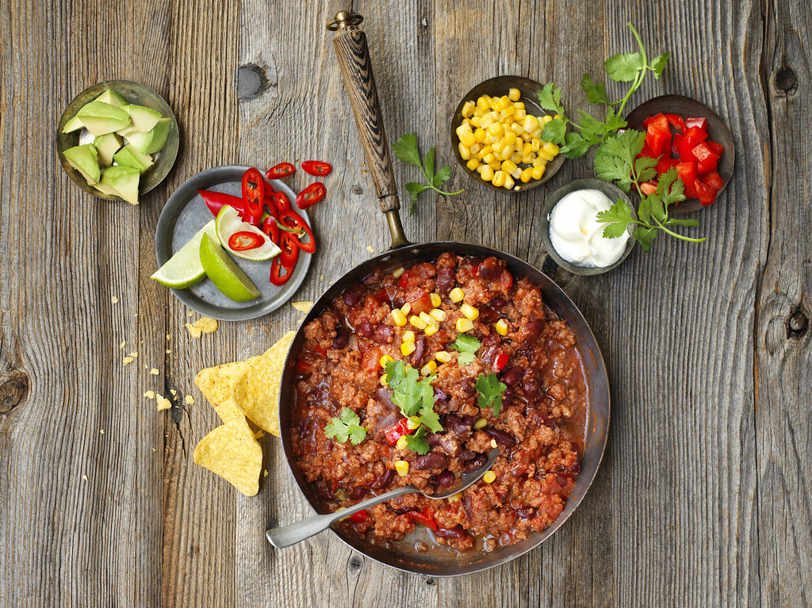

Chili

Description
This chili recipes takes advantage of the unique flavor profiles and textures of multiple different meats to ensure that every bite is like a new adventure!
Utilizing hearty ground beef, some chunky bacon, and sausage with a little kick, this chili will be a crowd favorite for any occasion. Whether it is part of
your weekly dinner rotation, a potluck surprise, or a family gathering, enjoyers will be hounding you for this recipe! Bonus: It makes great leftovers too!
Ingredients
- 2 Tablespoons Olive/Avocado oil
- 1 Pound Meaty Bacon, Chopped
- 2 Pounds Ground Beef
- Salt
- Pepper
- 1/3 Cup Chili Powder
- 2 Teaspoons Ground Coriander
- 2 Teaspoons Cumin
- 1 Teaspoon Dried Oregano
- 1 Teaspoon Paprika or Smoked Paprika
- 1 Pound Spicy Breakfast Sausage or Spicy Italian Sausage
- 2 Anaheim or Other Mild-Heat Green Peppers, Seeded and Chopped
- 1 Red Field Pepper or Bell Pepper, Seeded and Chopped
- 1 Rib Celery, Chopped
- 1 Large Onion, Chopped
- 4 Cloves Garlic, Chopped
- 2 Tablespoons Worcestershire Sauce
- 1 Cup Lager Beer
- 3 Cups Beef Stock
- ~30-ounce Diced Tomatoes
- 2 Teaspoon Honey
- 4 Tablespoons Cornmeal
Steps
- Heat a large pot over medium-high heat with 2 turns of the pan of oil.
- Add bacon and stir until crisp.
- Remove bacon to a plate and drain excess fat from pan, if necessary.
- Add beef to the pot and cook over medium-high heat, breaking it up with a wooden spoon.
- Season the beef with salt, pepper, chili powder, coriander, cumin, oregano and paprika.
- Add sausage to the pot as the beef browns then add peppers, celery, onions and garlic.
- Partially cover pot and cook to soften veggies, 7-8 minutes.
- Add Worcestershire, beer, stock, tomatoes, honey, cornmeal and reserved bacon.
- Bring to a bubble then reduce heat and simmer chili over medium-low heat for 1 hour, stirring occasionally.
- Serve chili in bowls topped with onions and pickled jalapeños, with cornbread or warm tortilla chips.
Home